左メニューの上にある締め月バッジが、作りたい月になっているか確認します。ちがうときは ◀ ▶ で合わせます。
※このツールは「15日締め」。例：8月度＝7/16〜8/15。作りたい月度の「◯月締め」に合わせます。
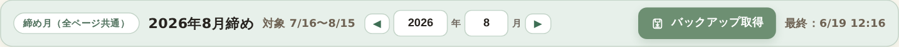
「シフト希望・全体予定」→「シフト希望」タブ。①タブ→②部署→③個人を選び、④希望（休など）を選んで ⑤「＋ このスタッフに追加」を押します。1件ずつ追加します。
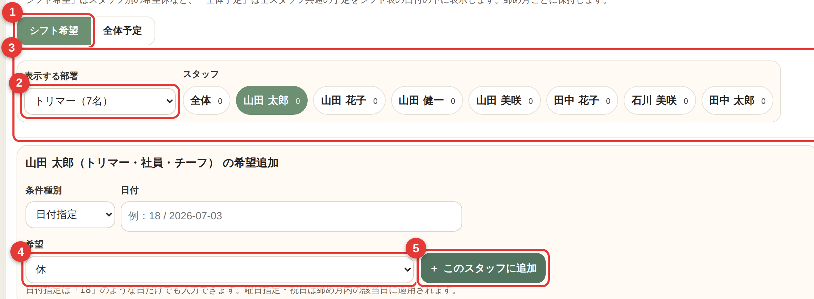
同じ画面の「全体予定」タブ。①タグ（納品・SALEなど）→②日付/曜日を決めて ③「＋ 追加」。お店全体の予定を入れます。
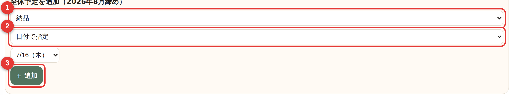
「部署別シフト作成」を開き、①作る部署のカードを選んで ②「✨ この部署だけ自動作成」を押します。（確定はまだ。手順7で行います）
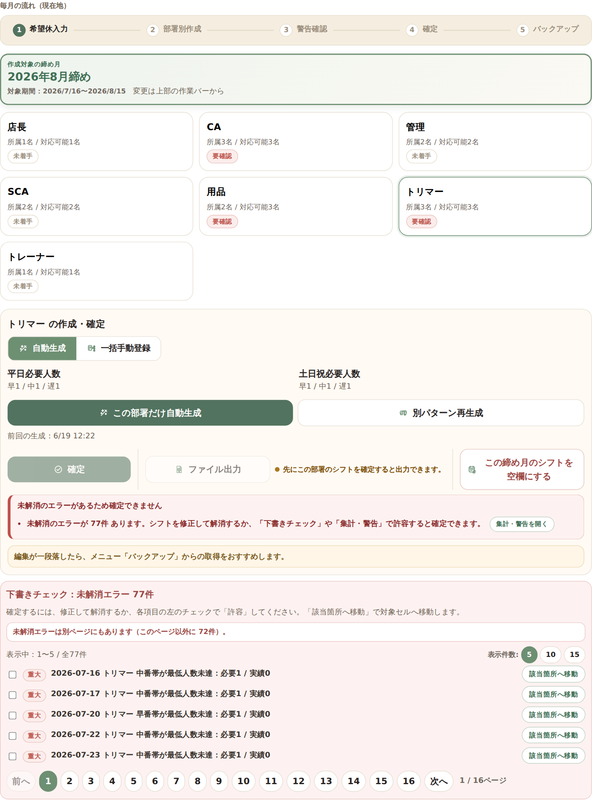
出てきた表をながめ、赤いセルや警告がないか確認します。気になるところは次の手順で直します。
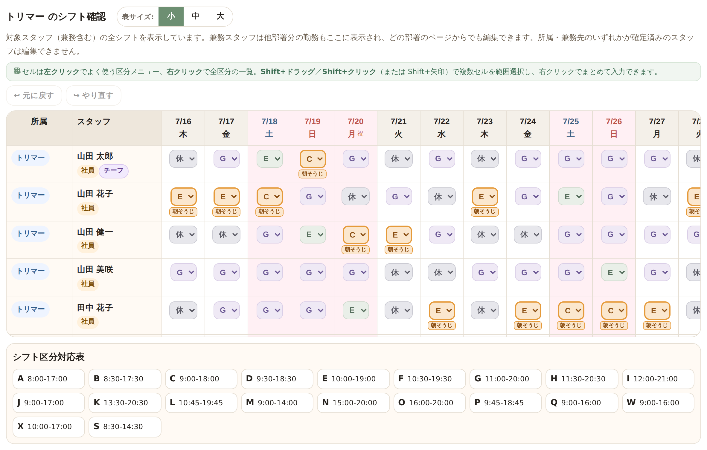
直すときは、いま開いている「部署別シフト作成」の確認表で直接直せます（全体シフト表へ移動しなくてOK）。マスを右クリックして「休／有休／シフト区分（C・E・Gなど）」から選ぶだけ（左クリックでも一覧が出ます）。
・まちがえたら Ctrl＋Z、または表の上の 「↩ 元に戻す」ボタンで戻せます。
・Shift＋クリック／ドラッグで複数のマスをまとめて選び、右クリックで一括変更できます。
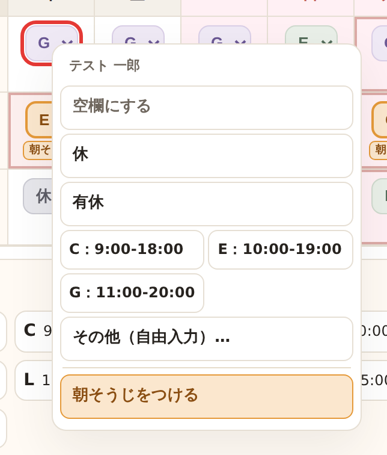
問題なければ「部署別シフト作成」で 「確定」を押します。全体表に反映され、そのセルは編集できなくなります（「再編集」で戻せます）。
※赤い「エラー（重大）」が残っていると確定できません。許容してよいかの判断はチーフ以上へ（→ 📖 13章）。
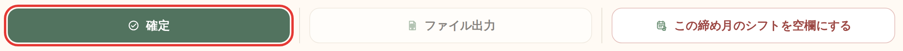
「バックアップ」を開き、緑の「バックアップ取得（JSON保存）」を押します。保存先を選ぶ画面が出たら、デスクトップの「KJM Shift＋バックアップ」フォルダを選んで「保存」を押します（下の画像）。
⚠ 同じ画面の赤い「すべて初期化」と「バックアップから復元」は押さないでください（押すのは緑の取得だけ）。
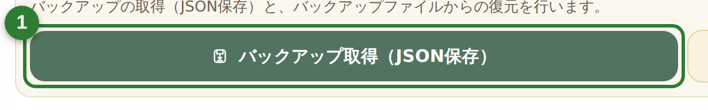
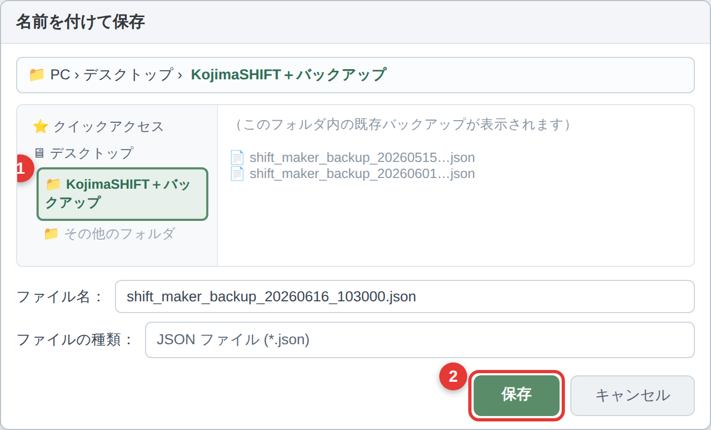
「部署別シフト作成」でトリマーを選ぶと、下に1か月分の月次表が出ます。年・月を取り込みたい月に合わせます。
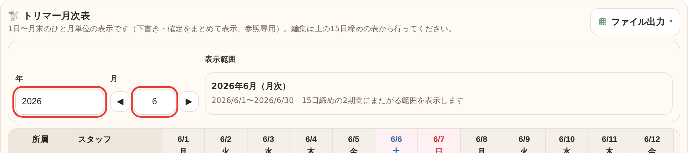
月次表の右上「ファイル出力」→「CSV出力」。CSVファイルが保存されます。ふつうはブラウザの「ダウンロード」フォルダに入ります（手順5でこのファイルを選びます）。
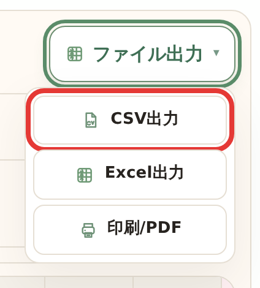
ブラウザでサロンドワンを開き、対象月のシフト表ページを表示します。⚠ 手順1で出力した月と同じ月のページを開いてください（月がちがうとずれて入ります）。
ブラウザのブックマークバーにある「サロンドワン_シフト自動入力」をクリックします。
手順2で保存したCSVファイルを選択します（見つからないときは「ダウンロード」フォルダを開きます）。
内容をシフト表に反映します。
人数・公休の位置・対象月が合っているか確認します。
問題なければ保存します。
「全体シフト表」を開き、締め月と全体の内容（各部署が確定済みか、へんな空欄がないか）を見て確認します（見るだけ。編集モードにする必要はありません）。
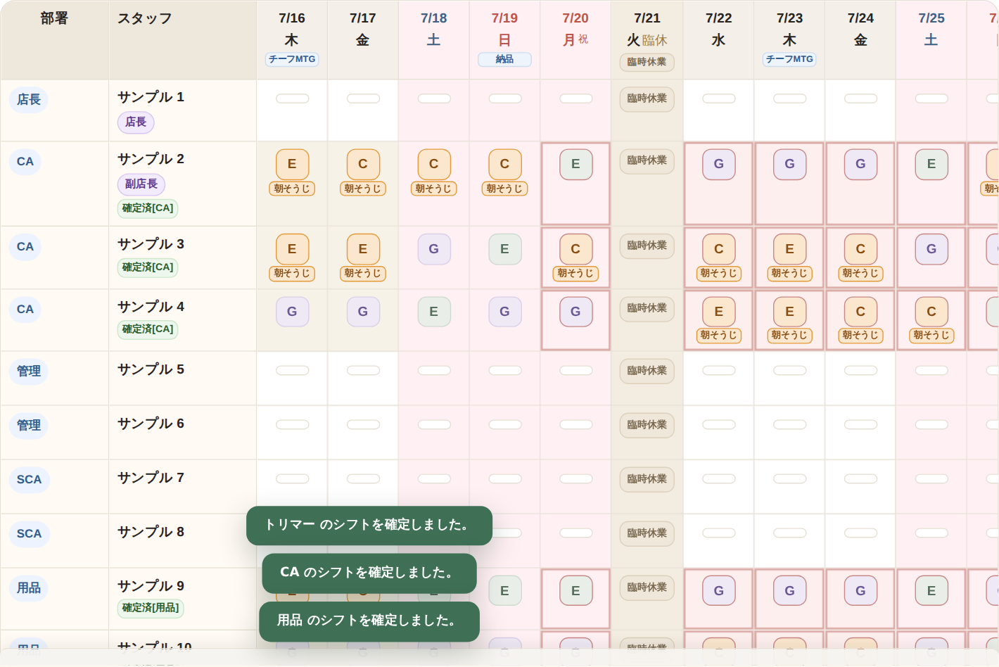
「📤 ファイル出力」を押して開き、「印刷/PDF」を選びます。プリンターを選んで印刷します。
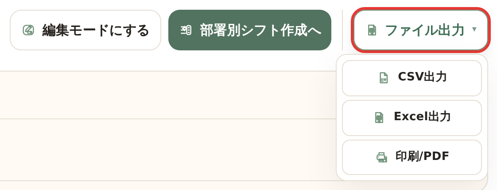
「バックアップ」→緑の「バックアップ取得（JSON保存）」（赤枠）。保存ファイルを「KJM Shift＋バックアップ」フォルダへ。
※赤い「すべて初期化」「バックアップから復元」は押さないでください。
「【店長】OBIC連携用」を開き、「コピー」を押します（休日/空欄をExcelと同じ形でコピー）。店長のみの操作。OBICへ自動送信はされず、手動で貼り付けて反映させます。
⚠ コピー前に、合計の横に赤い「社員番号 未設定 ○名」が出ていないか確認。出ていたら先に「スタッフ」画面で社員番号を入れます（未設定者は末尾に入り全員が1行ずれます）。→ 📖 19章
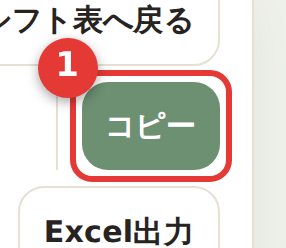
OBICのシフト表で、一番左上のセルに Ctrl＋V、または 右クリック→貼り付け で貼り付けます。
貼り付けた内容（人数・氏名の並び・休日の位置）が正しいか確認します。OBICの画面とツールの画面で内容が一致しているかを見ます。